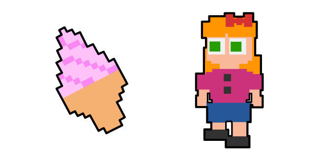
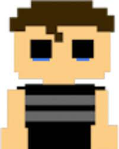

Tema: FNAF
3. quien es Michael Afton
Michael Afton (apodado Eggs Benedict) es el protagonista de Five Nights at Freddy's: Sister Location y Freddy Fazbear's Pizzeria Simulator. En Five Nights at Freddy's: Sister Location, es uno de los técnicos nocturnos empleados en Circus Baby's Entertainment & Rental
mas de esta información en esta pagina:
4. elizabeth afton
William Afton es el verdadero antagonista principal de la serie Five Nights at Freddy's. Es un asesino en serie que fue directa e indirectamente responsable de todos los incidentes, asesinatos y tragedias a lo largo de la serie. Su papel en la historia de la franquicia es fundamental
mas de esta información en esta pagina:

3. chris afton
Es víctima de los animatronics de pesadilla. Fue intimidado por su hermano mayor por tener miedo a los animatrónicos. Su hermano lo encierra en su habitación, sale de varios lugares con una máscara
mas de esta información en esta pagina:
